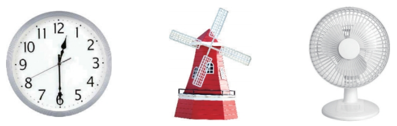
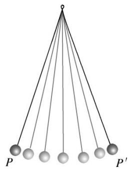
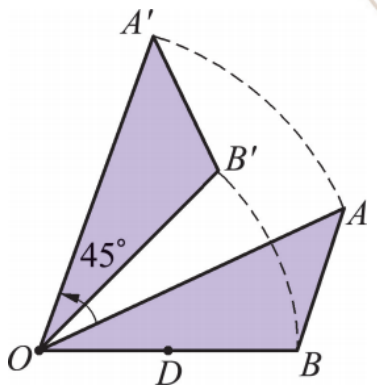
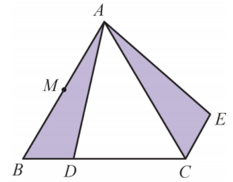
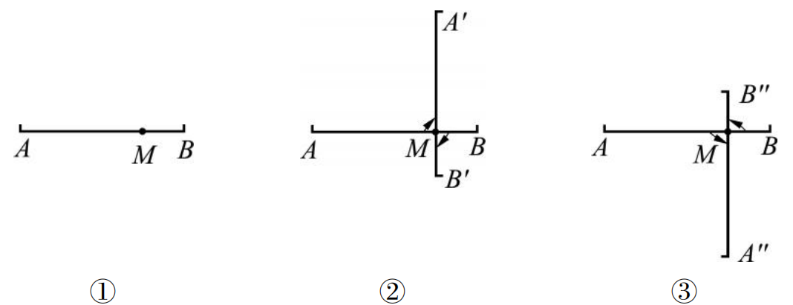
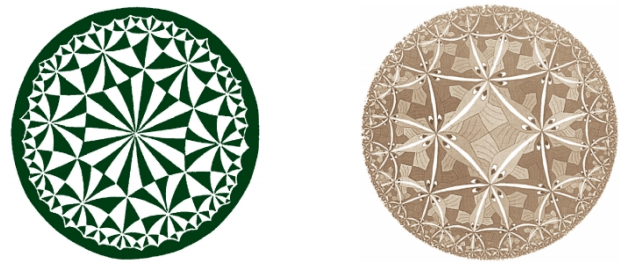
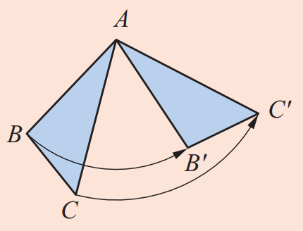
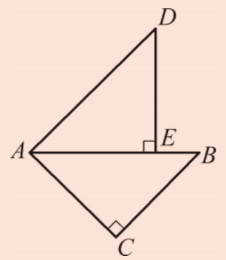

在日常生活中，除了物体的平行移动外，我们还可以看到许多如图9.3.1所示物体的旋转现象。时钟上秒针的不停转动提醒着人们时间的流逝，大风车的转动给人们带来快乐，飞速转动的电风扇叶片给人们带来丝丝凉意。


如图9.3.3，把一张半透明的薄纸，覆盖在作有任意△AOB的纸上，在薄纸上作出与△AOB重合的一个三角形。然后用一枚图钉在点 \(O\) 处固定，将薄纸绕着图钉（即点 \(O\) ）逆时针旋转 \(45^\circ\)，薄纸上的三角形就旋转到了新的位置，标上点 \(A'\) 、 \(B'\) ，我们可以认为 \(\triangle AOB\) 逆时针旋转 \(45^\circ\) 后变成 \(\triangle A'OB'\) 。

从图9.3.3中，可以看到点 \(A\) 旋转到点 \(A'\)，\(OA\) 旋转到 \(OA'\)，∠\(AOB\) 旋转到 ∠\(A'O'B'\)，这些分别是互相对应的点、线段和角。此时：
点 \(B'\)；线段 \(OB'\)；线段 \(A'B'\)；\(\angle A'\)；\(\angle B'\)；点 \(O\)；\(45^\circ\)。
如图9.3.4， \(\triangle ABC\) 是等边三角形， \(D\) 是边 \(BC\) 上一点， \(\triangle ABD\) 经过逆时针旋转后到达 \(\triangle ACE\) 的位置。
（1）旋转中心是哪一点？
（2）旋转了多少度？
（3）如果点 \(M\) 是 \(AB\) 的中点，那么经过上述旋转后，点 \(M\) 转到了什么位置？

解：(1) 旋转中心是点 \(A\) 。
(2) 旋转了 \(60^\circ\) 。
(3) 点 \(M\) 转到了 \(AC\) 的中点位置处。
如图9.3.5①，点 \(M\) 是线段 \(AB\) 上一点，将线段 \(AB\) 绕着点 \(M\) 顺时针旋转 \(90^\circ\) ，旋转后的线段与原线段的位置有何关系？如果逆时针旋转 \(90^\circ\) 呢？

解：如图9.3.5②，顺时针旋转 \(90^\circ\) ， \(A'B'\) 与 \(AB\) 互相垂直。如图9.3.5③，逆时针旋转 \(90^\circ\) ， \(A''B''\) 与 \(AB\) 互相垂直。
线段绕线段上的某一点旋转 \(90^\circ\) 后与原来位置的线段互相垂直。
图形的旋转在图案设计中也具有广泛应用。如图9.3.6所示的两幅美丽的图案都可以看成是由一个或几个基本图案，在同一平面上旋转若干次而产生的结果。

1. 举出现实生活中旋转的一些实例。
例如：摩天轮、旋转木马、汽车方向盘、水龙头开关、风扇叶片等。
2. 如图，\(\triangle ABC\) 按逆时针方向旋转一个角度后成为 \(\triangle AB'C'\) ，图中哪一点是旋转中心？旋转了多少度？

旋转中心是点 \(A\)，旋转了 \(\angle BAB'\) 的度数（或 \(\angle CAC'\)）。
3. 如图，\(\triangle ABC\) 和 \(\triangle ADE\) 都是等腰直角三角形，\(\angle C\) 和 \(\angle AED\) 都是直角，点 \(E\) 在边 \(AB\) 上，如果 \(\triangle ABC\) 经逆时针旋转后能与 \(\triangle ADE\) 重合，那么哪一点是旋转中心？旋转了多少度？

旋转中心是点 \(A\)，旋转了 \(45^\circ\)。
旋转不仅是几何变换，在自然界和人类创造中无处不在。雪花具有六重旋转对称性，许多花朵的花瓣也呈旋转对称分布。在艺术领域，旋转被用来创作动态的视觉效果，如抽象画家罗伯特·德劳内的作品。在工程技术中，旋转运动是机械的核心，从发动机到涡轮机都离不开旋转。旋转还是虚拟现实、计算机图形学中实现视角变换的基础。
抽象能力： 从生活实例中抽象出旋转的三要素。
几何直观： 通过图形理解旋转的不变性。
模型观念： 旋转是一种重要的图形变换模型。